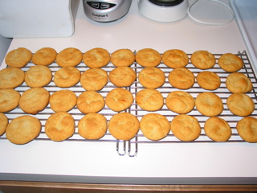

I had my mind all set to make some ginger snaps, only to discover that I was lacking molasses. But instead of losing hope, I used honey. (Its sorta is the same, sticky, sweet syrup stuff. right?)
| Amount | Measure | Ingredient |
|---|---|---|
| 3/4 | cup | shortening |
| 1 | cup | white sugar |
| 1 | egg | |
| 1/4 | cup | honey |
| 2 1/4 | cups | flour |
| 2 | tsp | baking soda |
| 1/4 | tsp | salt |
| 1 | tsp | powered ginger |
Mix together shortening, sugar, egg, and honey. Sift remaining ingredients together and add. Chill dough.
Preheat oven to 375 degrees.
Roll dough into balls about the size of large walnuts. Place about 3 inches apart on non-stick baking sheets. Bake until just set, not hard, about 8-10 minutes. Cookies will be lightly browned. (I usually have to wait a minute or two after pulling them out of the oven for the cookies to be firm enough to transfer to cooling racks.)